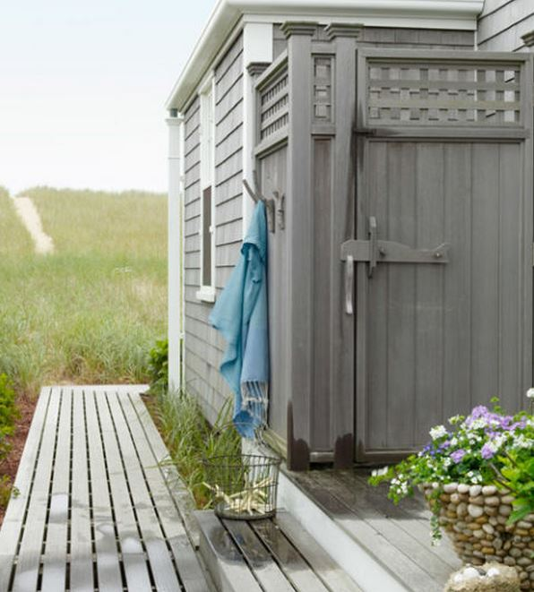

.png)
.PNG)
.PNG)
.PNG)
.PNG)
.PNG)
.JPG)
.JPG)
.PNG)
.PNG)


source
There is a big sign at the pool like this:
I’ve never really understood the purpose of showering before you get in the water.
It’s not like I’m all dirty before I jump in.
If there was the likelihood that I had been down at the beach or perhaps in a lake before coming to the pool, I would understand the need for it.
Or if I had been working out in the yard, it would make sense.
But on just your normal everyday swim, I am pretty clean.  🙂
The outdoor shower at the pool is usually just a simple pipe with a shower head on top and a pull string to turn on that cold water…brrrr. But at beach houses….now those showers are a different story!
They can still be simple but dressed up a little with a cute fabric shower curtain.
 Martha Stewart Living via apartmenttherapy.com
Martha Stewart Living via apartmenttherapy.com
Or they can be a work of architecture matching the style of the beach house.
They can express the owner’s personality…
playful….
colorful…
and just plain fun. 🙂
pottery barn kids via weheartit.com
I like how this one adds a punch of bright color to the neutral tone of the house (which happens to be an HGTV Smart Home of the Year.)
(And I had to show you the pool that goes with the house too since I know you want to see it. 🙂 )
How about an entire outdoor bathroom??
I’m not sure about this next one. It is in Seaside, Florida and owned by Barbara Baekgaard (one of the co-founders of Vera Bradley.) Does it look like it is outdoors, or is it just a clear roof with plants growing on it? Whatever it is, I would be pulling that curtain over the window if I were taking a bath in there!
Okay, these next two are my dream showers….
The first is really from my dream house – an HGTV Dream House.
And this second one is again in Seaside – a double shower for your big family!
My husband has said before that he would like to build an outdoor shower on our house so that when he is filthy from working outside, mowing the lawn, etc. he could clean up some before coming in. I think that is a great idea! Here is a good blog post that explains how this couple built their own. It turned out lovely!
painting it…
and a peek at the interior.
But…l know my husband isn’t thinking about something pretty. I am sure he has something in mind more like this (which actually has an uncanny resemblance to the exterior of our house – window trim and all!)
Or maybe I can talk him into this luxury model. 🙂
And that’s all the outside inspiration I have for you today. Do any of you have an outdoor shower? Luxury or basic? Do you use it much? I imagine we will have a shower before the day we have a pool….just much more practical.
Hope you are having a great weekend!


.PNG)
In 1968 or 1969 my parents rented a house in Ventura CA for the winter. We were the third house from the beach. This house had an outdoor shower and to this little 11-12 yr old Kansas girl, it was the most exotic thing ever. Ever! Thanks for reminding me of this sweet memory.
I’m new to your site. I think I’m I love with your house!
Even the baskets in your laundry have given me ideas for my closet!
I love beach decor.
I really enjoyed this behind the scenes look at these charming warm homes.
Kelly,
I do love the appeal of having an out door shower. The house we just rented in Cape San Blas, FL had one and used when came off of the beach before we hopped in the pool. All of the houses in the area had them. I am not sure how practical one would be here in Missouri? I would worry about the pipes freezing in the winter but perhaps there is a way to winterize it. Thanks for sharing these with us.
————————————————————————
Yes, they are so practical at the beach, but you are right about needing to winterize them in Missouri! I guess you would leave it dripping like we have to do with our outdoor faucets when the temperatures drop around here.
Thanks for reading the post!
Kelly
Terrific post – now I want an outdoor shower. And a beach house to go with it!
——————————————————————–
Thanks Bren! Your comment gave me a giggle, but I agree with you…would love a shower AND the beach house! 🙂
Kelly
We just completed an outdoor shower a few weeks ago. It has been such a great addition. Hubby uses it almost daily to shower off after yard work, working out and such. We love it!
———————————————————————-
That’s great Susan! I know it is such a practical thing to have, and it sounds like your husband is putting it to good use! 🙂
Kelly
This is our third house where we have had an outdoor shower and one was in the country so we had two! We live on the water, 5 mins from the beach and have a boat so it is so convenient. I agree with your husband about using it after yard work. We also have a pool so we usually just jump in there. Our grandchildren LOVE using the outdoor shower!
———————————————————————–
It sounds like you make very good use of outdoor showers Pamela! How wonderful to be so close to the water! I would love that…and jumping in a pool after yard work sounds like the perfect thing to do!
Kelly
So many great examples here Kelly! I love that beautiful HGTV.COM example with the small lap pool and turquoise enhanced exterior. Confessions…..I drool every time I visit Just Grand and view Erin’s Michigan property. Oh, how lucky they are to have such a wonderful getaway. With that beach front property, it makes wonderful sense to have an outside shower. So when are you taking the plunge and putting in that pool and shower??
Such a fun blog post, outdoor showers are quintessential to summertime! Our outdoor shower has been out of commission, but is up and running now. I am looking forward to using it, but need to do a little shopping first. I’m planning to use the shower caddy I bought for my son when he went off to college, it came back home after the first year, unused, and has been in the basement ever since. I’ll fill it with summery shower gels and shampoo/conditioner, maybe something from Bath & Body Works, and keep it ready for anyone who wants to shower outside, along with a white, terry cloth bath robe!
Hi Kelly, Your inspiration photos are fabulous! Just the kind of outdoor showers I would like to have too. My husband and I spend every summer dreaming of a pool but our yard is too small so we’d have to move! Thanks for the inspiration.
Hi Kelly,
These are wonderful examples and if we had a pool or lived walking distance to the beach I’d definitely. Put one of these beauties on the wish list. The public beaches here in Southern California have decided to turn the outdoor showers off due to the water shortage…it seems ridiculous to me as after a day at the beach a shower is needed. Oh well, such are the great minds of governmental officials.
I hope you’re enjoying a relaxing weekend.
xo,
Karen
These outdoor shower ideas were great and very useful! We always have had a very simple shower head or large basin to rinse off all the sand that seems to be inside- especially at the lake. Hubby always just jumps into the lake to get dirt off after yard work. There are some houses that have private areas for showering and sunbathing ( uh, to not have bathing suit strap lines– but I would worry about all the private planes and pontoon planes flying over!:) Looks like the area behind your deck would be perfect place for your pool and shower room! What ya think?!
————————————————————————-
Your husband gives new meaning to the phrase “Go jump in a lake!” I too would worry about the flying over aircraft if I were tanning in one of those private tanning areas. The area behind the deck has the septic tank, so it’s a no-go for a pool there, but the area behind the screened porch would be nice!
Kelly
And to think, all this time, I’ve just been using the garden hose. Sigh . . .
———————————————————————
Ha ha! That’s a start. Now move on up to the high end stuff! 🙂
Kelly
I believe every family home should be required to have an outside shower – no matter how humble. If you have never showered outside under a full moon YOU have not lived. Add this to your bucket list!
Don’t forget the music and the wine.
Could save Americans millions in therapy.
——————————————————————-
I will add that to my bucket list Nan! I think you are right about it being good therapy too. Yes, bring on the music with it. 🙂
Kelly
Hi Kelly, ok I get that a shower before entering a public pool might be a good idea….afterall, not everyone has adequate standard of hygiene but at home…oh! well…
When my son was a little guy he loved dirt and mud and seemed to seek it out at every opportunity like jumping in every mud puddle on the way home from school or going to neighborhood brook to gather tadpoles…. then there were all those soccer games played on muddy fields…now those were the days I would have given a small fortune to have had an outdoor shower.
Have a terrific weekend.. maybe even shopping at HD for plumbing supplies :}}
———————————————————————-
It sounds like you REALLY needed an outdoor shower with your dirt-loving son!! I think my mother would have liked one as well with all that my brother, sister, and father did outside. I almost bought my husband a free standing outdoor shower years ago when Pottery Barn had them in stock, but I decided that he could make one for much less….still waiting on it. 🙂
Kelly
Kelly, I agree. What’s with showering Before going into the pool?
The only thing that it did for me was to save the shock of getting wet in the pool. These outdoor showers are really fun and so varied. And I am with you….that one with the window….what were they thinking? I think I would have it removed, covered, or something…quickly. Like the idea of the tub though, especially in hot, hot, areas where an outdoor soak would be ‘a breath of fresh air’, or when I wanted to bathe the dog :-). Peeling off
dirty yard-working clothes and taking a shower in one of these is really ‘apeeling’. Pardon the pun.
Have a great weekend.
—————————————————————–
There is still shock with the shower since it is usually just as cold! I guess the drape is supposed to be pulled around over that window for privacy. I did not even think about bathing a dog in the tub. Great idea!!
Your pun is too funny! 🙂 Hope you are enjoying your weekend!
Kelly